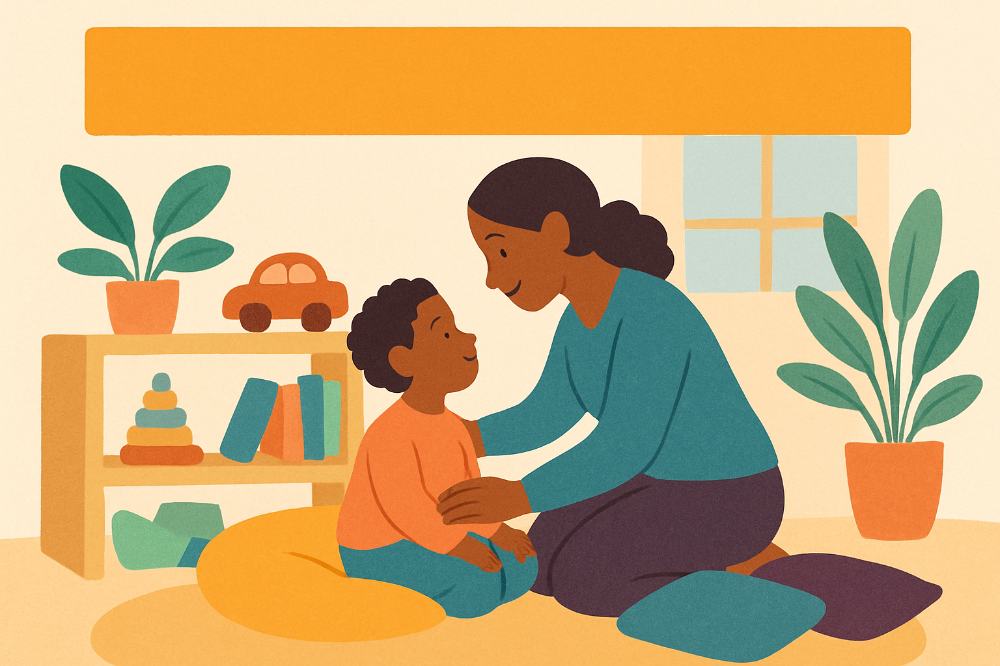

← Weekly Insights · September 21, 2026
Helping Quiet Children Thrive
A quiet child shutting down can be a sign of overwhelm, not a lack of effort.

An illustrative, composite scenario — not a real named incident. Educational content only; not medical or legal advice. For diagnosis or support, consult qualified professionals.
"Emma" sits quietly at her desk, avoiding eye contact and not joining group activities. Her teachers worry she isn’t trying, but Emma feels overwhelmed and anxious in the noisy, busy classroom.
At home, Emma’s parents notice she often 'shuts down' after school, retreating to a quiet corner instead of talking about her day. They want to understand what could help her feel safe and engaged in class.
Behaviour is communication
Instead of seeing quiet behavior as resistance or laziness, consider it a signal that the child feels overwhelmed or unsafe.
Silence and withdrawal can be coping strategies for managing anxiety — not a lack of interest in learning.
Creating spaces and routines that help regulate emotions first can open the door for participation and growth.
What was likely really going on
Sensory Overload
A child sensitive to noise, bright lights, or too much activity can feel overwhelmed and shut down because the classroom environment is too stimulating.
Fear of Mistakes
Anxiety about not getting things right can make a child avoid trying, leading to silence as a protective response.
Lack of Emotional Regulation Skills
Without tools to manage strong feelings, a child may retreat inward instead of engaging, making them seem unmotivated or disinterested.
What could have helped
Reggio Emilia: Creating Inviting Spaces for Expression
Set up calm, cozy corners with natural materials where children can choose to go when they need a break. This respects the child’s need for safety and honors their self-guided learning at their own pace.
Montessori: Prepared Environment with Freedom and Limits
Arrange clear, orderly spaces where the child can work quietly and independently. Provide choices within clear boundaries, allowing the child to control their activity in ways that feel manageable.
Early-childhood practice: Regulate First, Teach Second
Prioritize helping the child feel calm and secure before expecting participation. Use soothing routines, gentle encouragement, and consistent signals that build trust and emotional safety.
Try this at home & school
- Create a quiet corner with soft lighting and calming objects for retreat.
- Offer choices of activities that can be done individually and quietly.
- Use predictable routines to reduce anxiety about what’s coming next.
- Speak softly and give the child extra time to respond before calling on them.
- Encourage the child’s interests to foster connection and confidence.
Support Quiet Learners with Patience
If you're supporting a child like this, our neurodiversity strategies and free guides are a good next step — or send us your situation.
Get the weekly insight
One short, practical read each week on what’s really going on beneath children’s behaviour — and what actually helps. Free. Unsubscribe anytime.